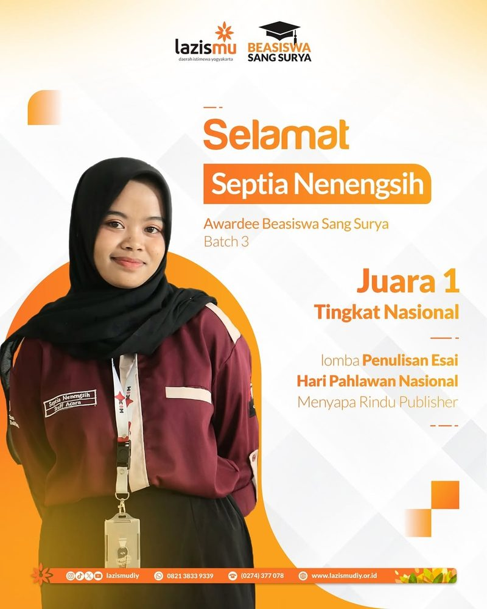
National Essay Writing — 1st Place
Hari Pahlawan essay contest · Menyapa Rindu Publisher · 2024
WritingNational
Welcome to my
Portofolio
Click anywhere to skip
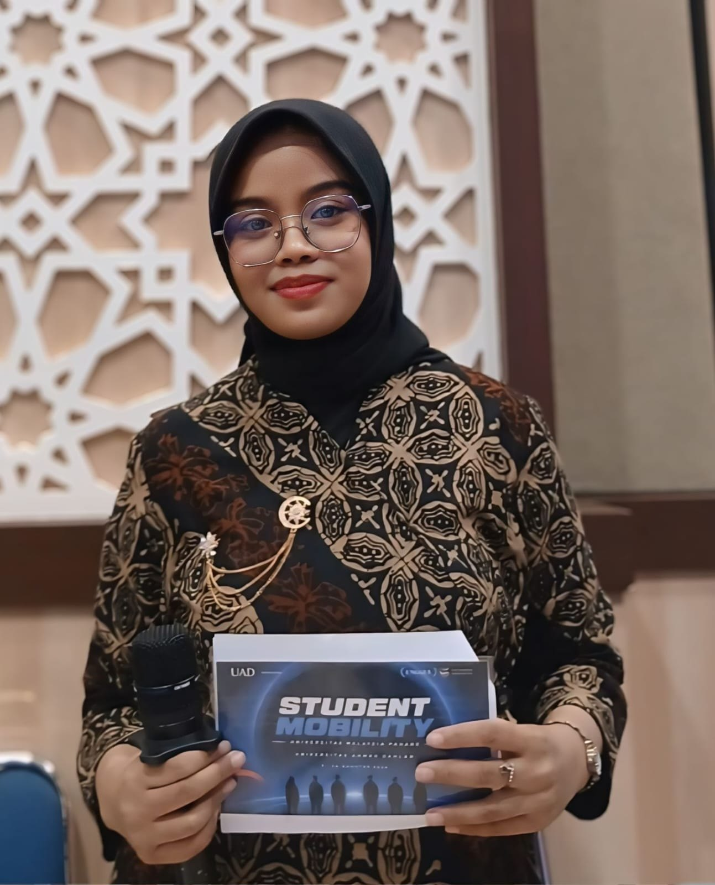
Assalamu'alaikum & hello there
to the portofolio of Septia Nenengsih
Informatics student, writer, Master of Ceremony, journalist and education ambassador. I'm an Informatics student
Scroll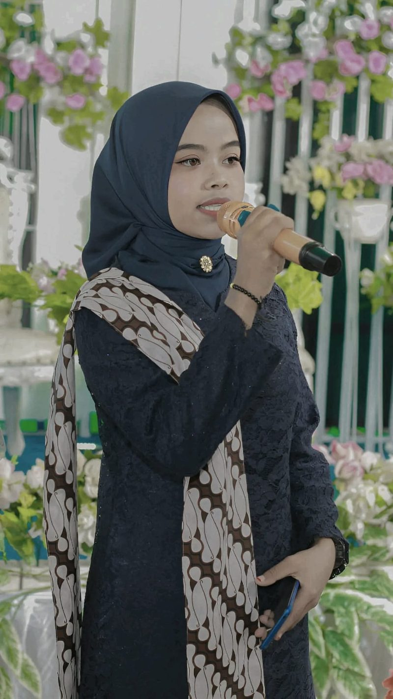
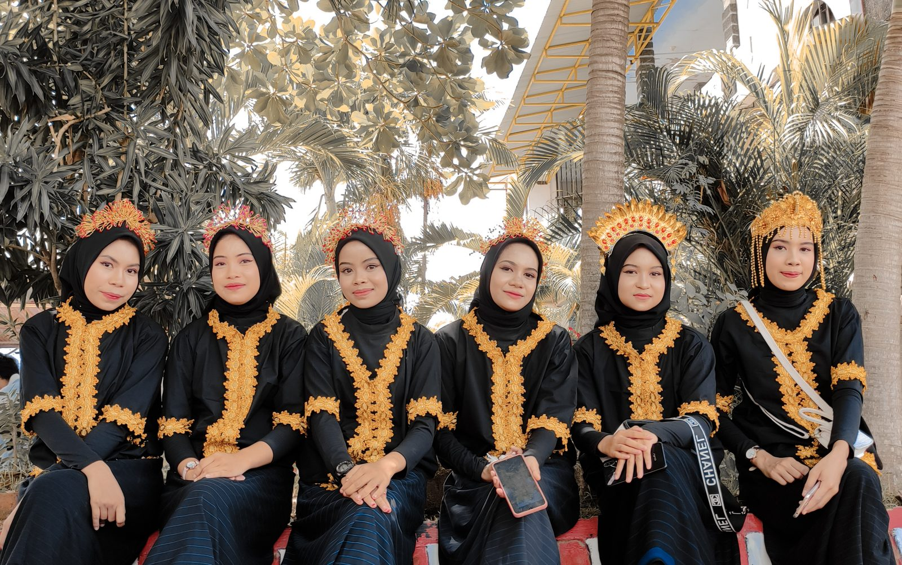
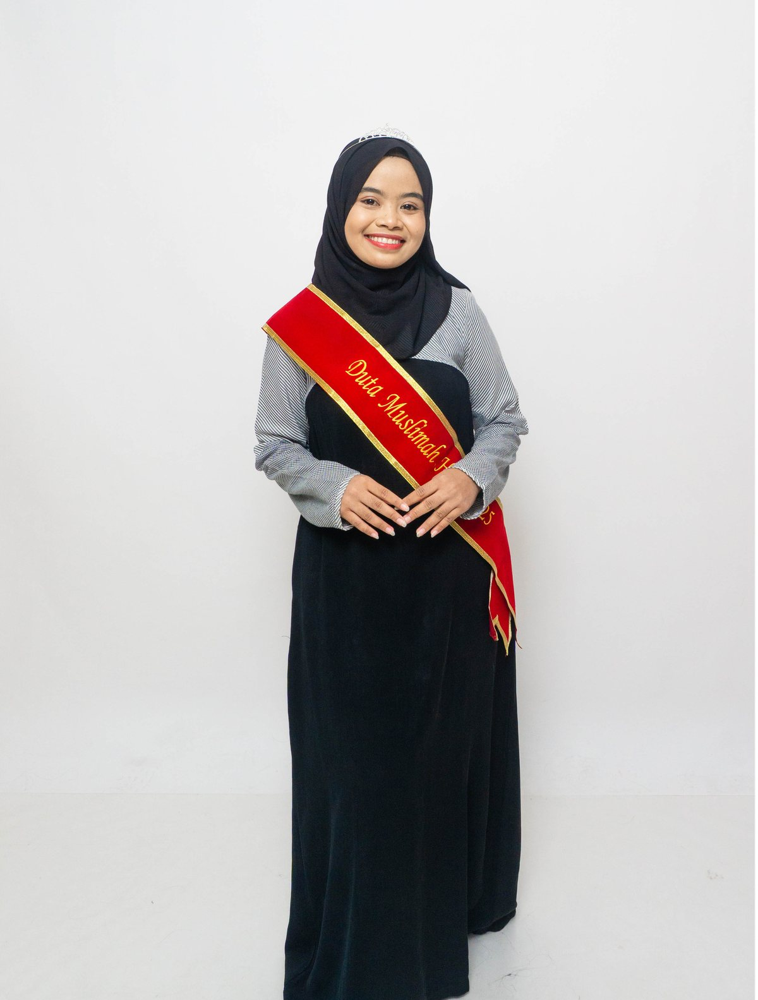
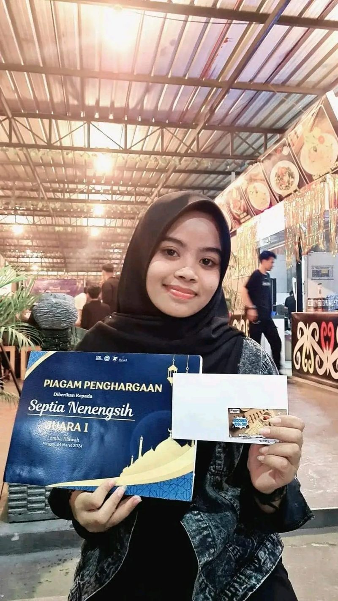
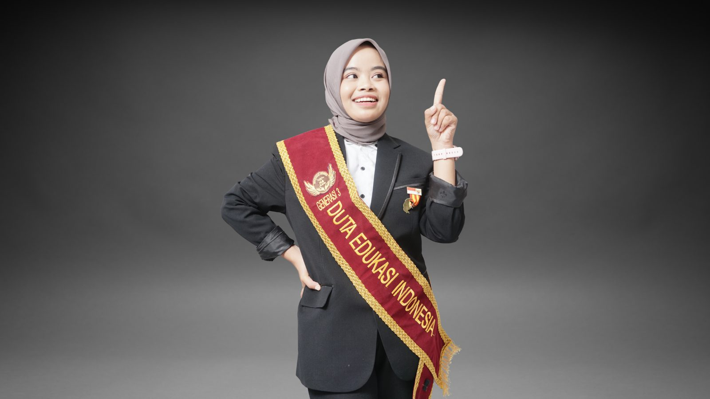
Hi, I'm Septia Nenengsih — an Informatics student at Universitas Ahmad Dahlan from Bima, West Nusa Tenggara. I'm passionate about technology and solving problems with digital solutions, and I'm always learning and growing in programming, data analysis and technological innovation.
Beyond the screen, I write essays and poetry, recite the Qur'an, host events as an MC and report as a journalist for UAD's Public Relations & Protocol office. I like to work in a team and strive to contribute to the world of technology.
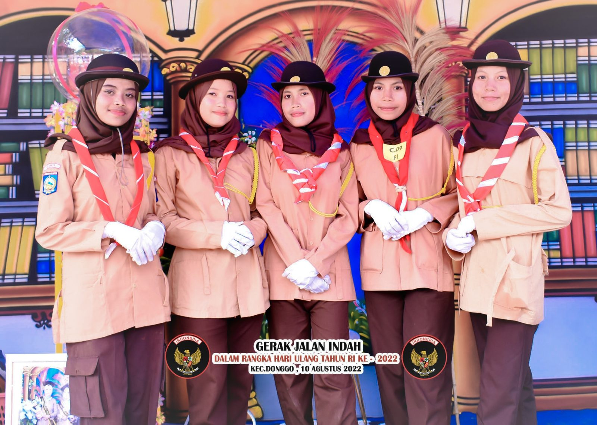
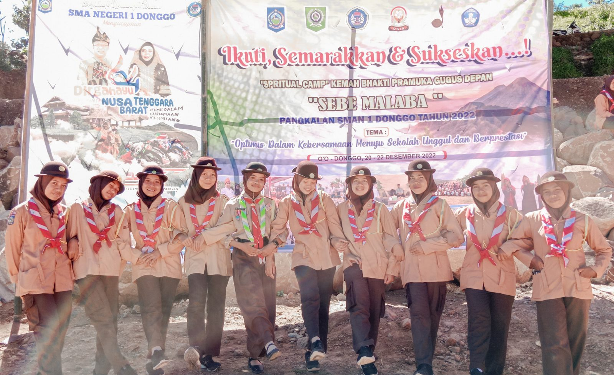
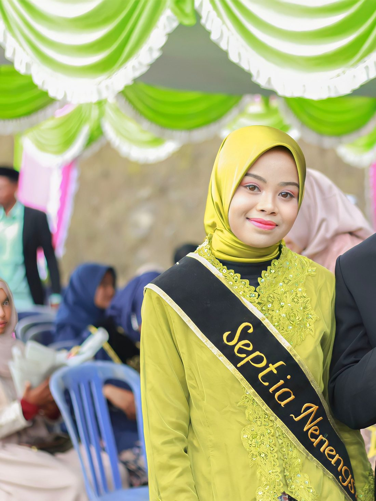
“Terinspirasi dan menginspirasi”Inspired and inspiring
Selalu mencari inspirasi dari orang-orang yang luar biasa dalam berbagai bidang, karena saya percaya bahwa dengan belajar dari mereka, saya dapat memaksimalkan potensi saya.
Saya ingin menjadi sumber inspirasi bagi orang lain setelah mencapai kesuksesan saya sendiri; saya ingin memberi mereka inspirasi dan pengetahuan untuk membantu mereka mencapainya juga. Dengan cara ini, siklus inspirasi dapat berlanjut dan berkontribusi pada banyak orang dengan cara yang bermanfaat.
— Septia Nenengsih
Terima kasih sudah selalu menjadi rumah tempat aku pulang.
Terima kasih karena tidak pernah membandingkan prosesku dengan siapa pun, selalu percaya pada langkahku, dan tetap menganggapku sebagai putri kecil kalian, apa pun yang terjadi.
Untuk Papa, Ruslin, S.Pd., dan Mama, Titi Kustiati, S.Pd., Gr., terima kasih untuk setiap doa, dukungan, dan kasih sayang yang tidak pernah kurang.
Apa pun pencapaianku nanti, aku tahu ada dua orang yang selalu menjadi tempat ternyaman untuk pulang. 🤍
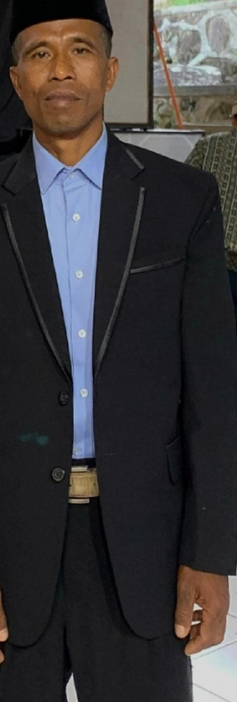
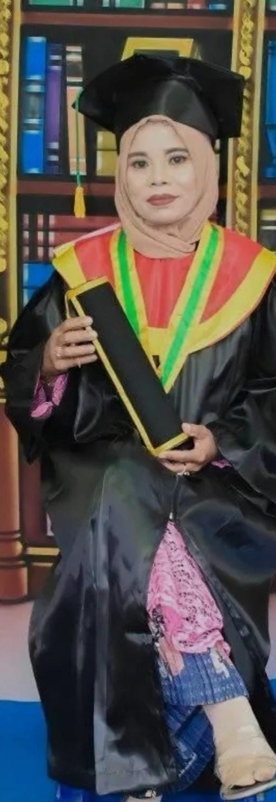
From national essay stages to ambassador programs and Qur'an recitation — a few highlights, and the full list below.

Hari Pahlawan essay contest · Menyapa Rindu Publisher · 2024
Representing Nusa Tenggara Barat · National · 2025
Representing Nusa Tenggara Barat · National · 2025
| Year | Achievement | Result | Organizer | Level |
|---|---|---|---|---|
| 2025 | Duta Muslimah Hijab (NTB representative) | Hijab Syar'i category | Duta Muslimah Hijab Since | National |
| 2025 | Duta Edukasi Indonesia (NTB representative) | Best 1 Instagram · Best 2 TikTok · Best 3 YouTube · Best 3 Duta of the Month | Duta Edukasi_ID | National |
| 2025 | Poetry writing contest batch #4, “Jejak Rindu di Bait Kata” (published in a book) | Selected author | Halo Penyair | National |
| 2025 | Poster competition | Participant | Duta Inspirasi Library | National |
| 2024 | Essay writing for Hari Pahlawan (Heroes' Day) | 1st Place | Menyapa Rindu Publisher | National |
| 2024 | Tilawah competition | 1st Place | Social & Religious Dept., HMIF FTI UAD | Study program |
| 2023 | Indonesian Science Olympiad | Gold medal Biology · Bronze medal Civics | Indonesian Sains Olympiad | National |
| 2023 | Reading & writing literacy movement | Best 1 | SMAN 1 Donggo | School |
| 2022 | Scientific writing contest, Mahandraga Geological Event | 3rd Place | Universitas Muhammadiyah Jember | National |
| 2022 | Essay & opinion, NTB Gemilang flagship program (“Pesona Destinasi Wisata Kampoeng La Hila”) | 1st Place | Provincial Government of NTB | Province (NTB) |
| 2020 | Religious sermon (ceramah) contest | 1st Place | SMAN 1 Donggo | Sub-district |
| 2020 | Tilawatil Qur'an | 1st Place | SMAN 1 Donggo | School |
| 2020 | Hafidz Qur'an (1 juz) | 2nd Place | SMAN 1 Donggo | School |
Assignments from my Professional English course, practising how to introduce myself and communicate clearly and politely in English for real, everyday professional situations.
A short video in which I introduce myself in English: who I am, where I study, and what I'm passionate about.
A formal complaint letter for an item that didn't match its description, plus short professional messages based on my own online order.
Complaint: Item Not as Described
Dear GAFINA.ID,
I am writing about my order placed on 8 August 2026 for the Karla Top. The product page described it as a premium semi-wool blouse; however, the item I received is a thinner fabric with a different shade and a smaller size.
As the item does not match its description, I would like to request a return and full refund.
Sincerely,
Septia Nenengsih
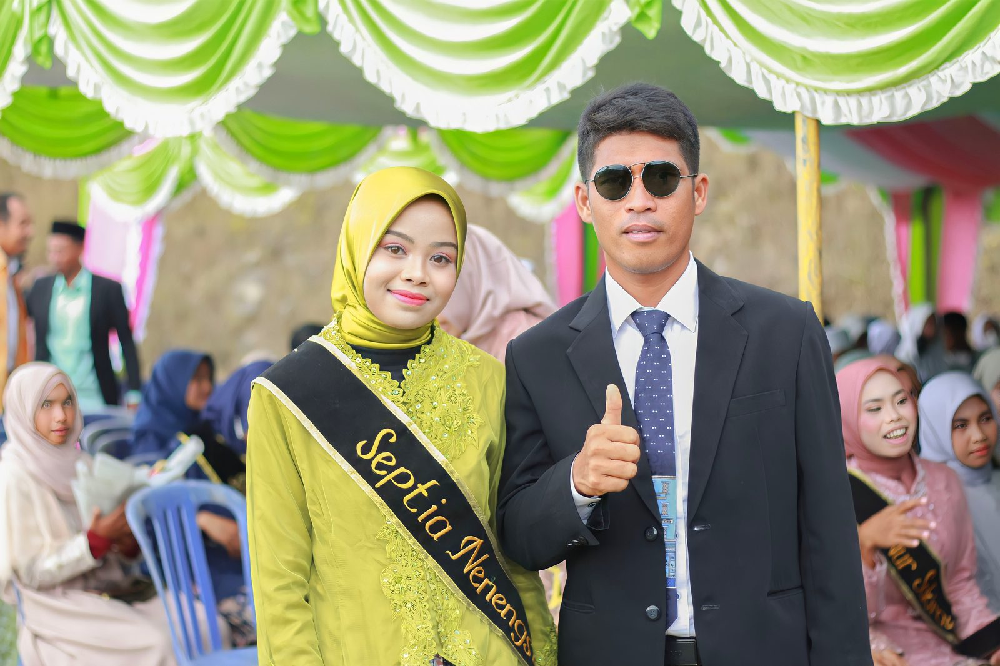
Cartoons, conversations and kitchen ideas I keep coming back to — press play to watch here.
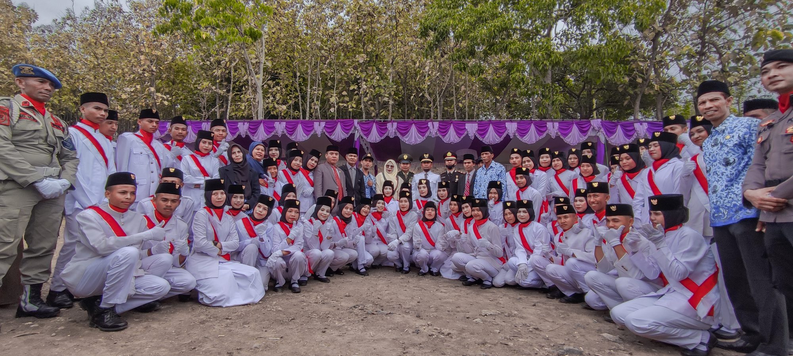
Social Media
Follow along for events, recitations, writing and everyday moments.